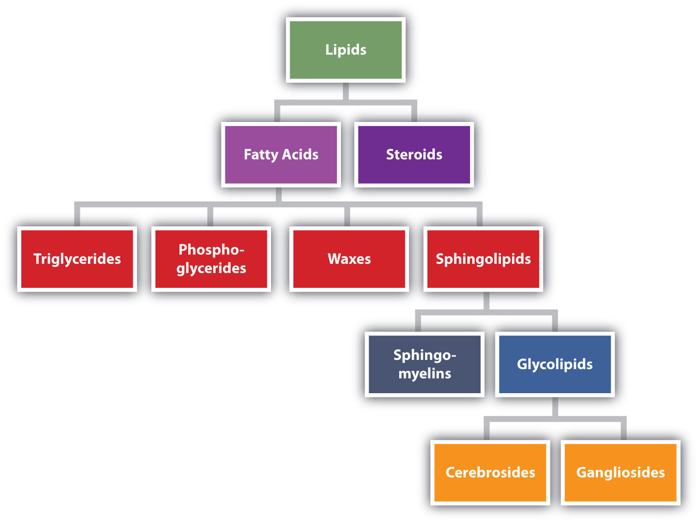

On July 11, 2003, the Food and Drug Administration amended its food labeling regulations to require that manufacturers list the amount of trans fatty acids on Nutrition Facts labels of foods and dietary supplements, effective January 1, 2006. This amendment was a response to published studies demonstrating a link between the consumption of trans fatty acids and an increased risk of heart disease. Trans fatty acids are produced in the conversion of liquid oils to solid fats, as in the creation of many commercial margarines and shortenings. They have been shown to increase the levels of low-density lipoproteins (LDLs)—complexes that are often referred to as bad cholesterol—in the blood. In this chapter, you will learn about fatty acids and what is meant by a trans fatty acid, as well as the difference between fats and oils. You will also learn what cholesterol is and why it is an important molecule in the human body.
Fats and oils, found in many of the foods we eat, belong to a class of biomolecules known as lipids. Gram for gram, they pack more than twice the caloric content of carbohydrates: the oxidation of fats and oils supplies about 9 kcal of energy for every gram oxidized, whereas the oxidation of carbohydrates supplies only 4 kcal/g. Although the high caloric content of fats may be bad news for the dieter, it says something about the efficiency of nature’s designs. Our bodies use carbohydrates, primarily in the form of glucose, for our immediate energy needs. Our capacity for storing carbohydrates for later use is limited to tucking away a bit of glycogen in the liver or in muscle tissue. We store our reserve energy in lipid form, which requires far less space than the same amount of energy stored in carbohydrate form.
Lipids have other biological functions besides energy storage. They are a major component of the membranes of the 10 trillion cells in our bodies. They serve as protective padding and insulation for vital organs. Furthermore, without lipids in our diets, we would be deficient in the fat-soluble vitamins A, D, E, and K.
Lipids are not defined by the presence of specific functional groups, as carbohydrates are, but by a physical property—solubility. Compounds isolated from body tissues are classified as lipidsA compound isolated from body tissues that is more soluble in organic solvents than in water. if they are more soluble in organic solvents, such as dichloromethane, than in water. By this criterion, the lipid category includes not only fats and oils, which are esters of the trihydroxy alcohol glycerol and fatty acids, but also compounds that incorporate functional groups derived from phosphoric acid, carbohydrates, or amino alcohols, as well as steroid compounds such as cholesterol. (Figure 17.1 "Lipid Organization Based on Structural Relationships" presents one scheme for classifying the various kinds of lipids.) We will discuss the various kinds of lipids by considering one subclass at a time and pointing out structural similarities and differences as we go.
Figure 17.1 Lipid Organization Based on Structural Relationships
